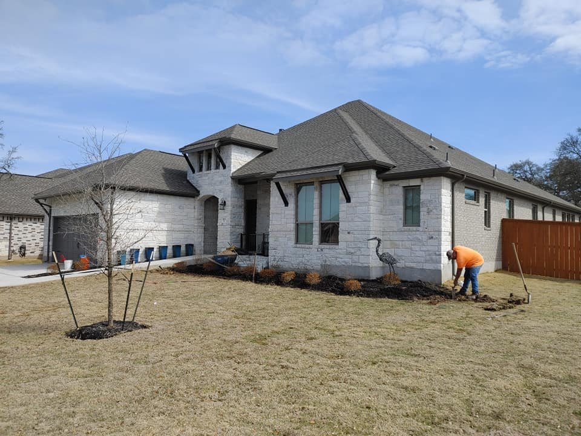
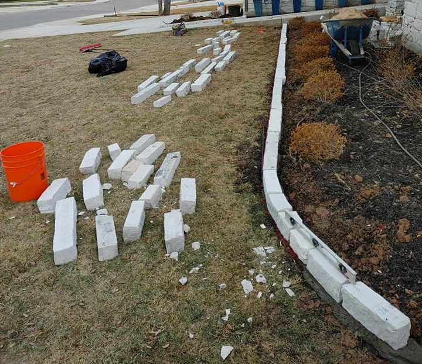

Flowerbed Installations
Properties have spaces that are utilized to grow plants, flowers, shrubs, and trees. To create a barrier for insects and weeds homeowners often decide to build flowerbeds constructed using masonry material. At Roland's Landscaping we build flowerbeds using brick or limestone masonry material. Our flowerbeds help contain soil, and water. Additionally, our flower beds are gorgeous and will increase the curb appeal of your property. We have built flowerbeds for hundred's of satisfied clients. Our client in Georgetown, TX hired Roland's Landscaping to build a flowerbed for their front yard in the summer of 2021.
Before Flowerbed Installation
Typically, a newly built home does not come with any landscaping additions, which is why homeowners typically hire landscaping companies to build landscaping additions. Our clients wanted a flowerbed that matches their home's masonry design.
Our Flowerbed Building Process
Our team at Roland's Landscaping built this flowerbed using limestone masonry products. We built this flowerbed using traditional masonry building processes and used concrete as a binder to hold the flowerbed structure.
After Flower Bed Installation

Our team designed and built a flower that matched our client's home. This flowerbed helps contain the soil and the water used to irrigate the garden. A flowerbed from Roland's Landscaping also increased the properties curb appeal.
To add flowerbeds to your property feel free to contact us via the contact page or set an appointment through our estimates page and a member of the Roland's Landscaping team will contact you